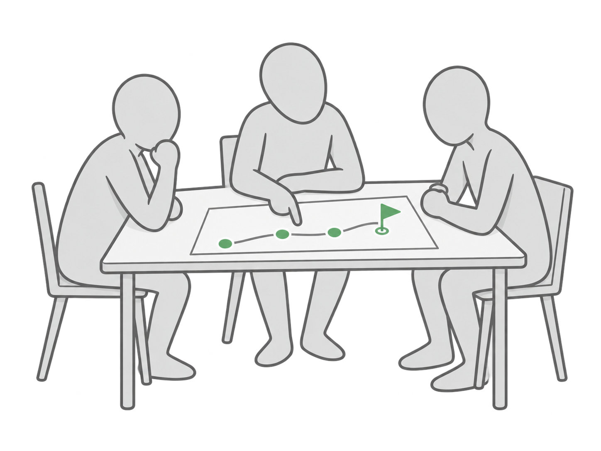
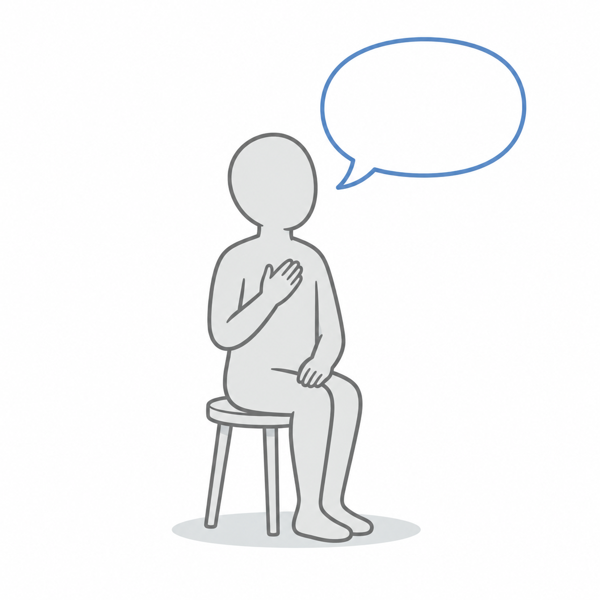

1You
Present your plan
Open the board from the invite link. Present from your column, level by level, BHAG to sprint lanes. Say which numbers are on track.
Tuesday, December 1 · 12 to 4 PM · The Rose Room, National Club

One personal, one business.

Lunch guest · Home Painters Toronto
1You
Open the board from the invite link. Present from your column, level by level, BHAG to sprint lanes. Say which numbers are on track.
2Everyone
3Group
Share from your experience, not advice. Use "I" and "did", not "you" and "should".
4Coach
Clarifying questions and direct feedback. You close with the one change you will make.
| Level | What it is for |
|---|---|
| BHAGBig Hairy Audacious Goal10 to 30 years | The company's long-term ambition. No numbers. |
| 3HAGThree-Year Highly Achievable Goal3 years | What the company will be and be known for, the key capabilities that get it there, and the numbers that prove it |
| 1HAGOne-Year Highly Achievable GoalThis year | What must get done this fiscal year, ranked, and the numbers that prove it |
| QHAGQuarterly Highly Achievable GoalNext quarter | What must get done this quarter to move the year's priorities, and the numbers month by month |
| 13-Week Sprint LanesWeek by week | The task each week that hits each quarterly priority, and the widget forecast week by week |
Your rows are on the board, with one owner each.
5 words or less.
How do you feel right now?